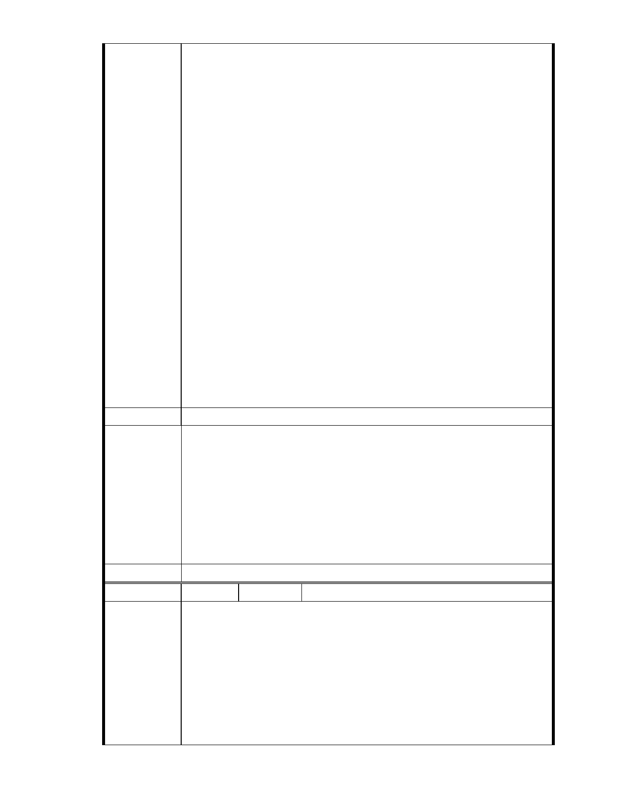

上，應實施環境影響評估」之規定，本案變更山坡地保護區作為社會福
利特定專用區允許設置安養中心、護理機構或長期照護機構、養護機構、
安養機構等老人福利機構…使用，且申請開發面積一公頃以上，應實施
環境影響評估。
台北市政府環保局設置老人「輕安居中心」部分：依據「認定標準」第
31 條第 11 款「安養中心」、「老人福利機構（包括長期照護機構、養護
機構、安養機構）」之興建，若位於山坡地之區位，且申請開發面積 1
公頃以上，即應實施環評。（詳 960713 第二次討論會議紀錄）。
本案週圍山坡地之坡腳部分之天然排水溝與鄰接南基地東北角之三合院
基地…均為佛教慈濟慈善基金會所有土地，週圍相鄰土地超過 16 公頃以
上，實不容切割成小於 5 公頃以下基地申請，再強行冠以文教建設開發
之名義免實施環評，這種規避環評的拙劣手法，一般人一看就懂，官員
及 貴委員會怎會不知？
本聯盟是由一群社區裡的家庭主婦、退休居民和學生所組成，大家自掏
腰包捐出買菜錢、退休金、和打工賺來的零用錢，只希望能用一己微薄
之力希望能守護內湖珍貴的山水和我們深愛的家園。請 貴會通知本聯盟
列席參與本案後續所有會勘、審議，並請依政府資訊公開法將會議時間、
地點，及會議資料、紀錄等相關資訊提前公開上網，俾便閱覽。
建議辦法
一、本案目前提出方案之使用項目未含「開發行為應實施環境影響評估
細目及範圍認定標準」第 31 條所列之安養照護設施。
二、本案申請範圍於慈濟購得前已遭填平破壞作汽車停車場使用，已長
市府說明
年不具保護區之功能；目前申請方案較先前方案已大幅降低開發強
度、調整使用項目並承諾大面積滯洪設施等回饋事項，將改善地區
整體環境促進多贏發展。
三、後續審理程序將要求申請人加強與在地區民、社會大眾，就基地現
況、規劃方案及環境助益作為等方面加強溝通。
委 員 會 決 議 同編號 1。
編號
陳情理由
122 陳情人 陳乃立（MA201210220399）、MA201210230275
主旨：
有關「變更臺北市內湖區成功路五段大湖公園北側部分保護區及道路用
地為社會福利特定專用區主要計畫案」，本人依據 貴委員會歷次專案小
組會議委員意見，提出本案應實施環境影響評估陳情意見，敬請查照。
說明
一、
依據都市計畫法第 19 條第 1 項規定辦理。
- 134 -